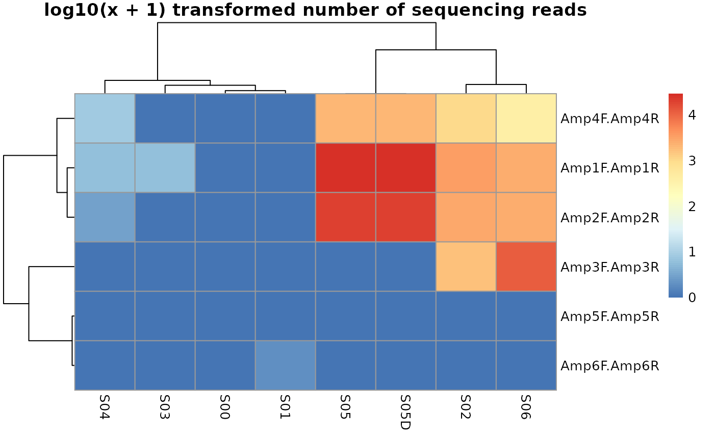

The MultiAmplicon-package allows the matching and removal of primer sequences from sequencing reads. Amplicons, here defined as the sequences amplified by particular combionation of forward and reverse primer, can then be further processed. The package further guiedes downstream analysis of multiple amplicons in a bioconductor workflow wrapped around the package dada2 (and phyloseq).
The MultiAmplicon package uses dedicated classes to ensure that input to its sortAmplicons function is provided correctly. Concerning input files, this means for the user that file names (including paths to the directory they are stored in) of forward and reverse sequencing read files must be provided as a PairedReadFileSet. These files can contain reads in fastq or in gzipped fastq format. We focus as a default use case on (non-interleaved) paired-end reads, as these are the most common format Illumina sequencing reads are currently produced in (but see vignette xyz as an example how to process single-end sequencing data).
Similarly, primer pairs must be provided in a PrimerPairsSet. We then match forward and reverse primers at the start of forward and reverse reads, respectively. The maximal number of missmatches and the maximal distance from the start of the read can be supplied as arguments to the function. The primer sequences are trimmed from the reads and the read-pair is associated with the amplicon defined by the primer-pair. While we focus on this default use case, the package can als be used adaptor trimming with a single primer (see vignette xyz).
But to go on with our main intended use case example first have a look at how PairedReadFileSet and PrimerPairsSet are generated.
suppressMessages(library(MultiAmplicon))
primerF <- c(Amp1F = "AGAGTTTGATCCTGGCTCAG", Amp2F = "ACTCCTACGGGAGGCAGC",
Amp3F = "GAATTGACGGAAGGGCACC", Amp4F = "YGGTGRTGCATGGCCGYT",
Amp5F = "AAAAACCCCGGGGGGTTTTT", Amp6F = "AGAGTTTGATCCTGCCTCAG")
primerR <- c(Amp1R = "CTGCWGCCNCCCGTAGG", Amp2R = "GACTACHVGGGTATCTAATCC",
Amp3R = "AAGGGCATCACAGACCTGTTAT", Amp4R = "TCCTTCTGCAGGTTCACCTAC",
Amp5R = "AAAAACCCCGGGGGGTTTTT", Amp6R = "CCTACGGGTGGCAGATGCAG")
PPS <- PrimerPairsSet(primerF, primerR)
fastq.dir <- system.file("extdata", "fastq", package = "MultiAmplicon")
fastq.files <- list.files(fastq.dir, full.names=TRUE)
Ffastq.file <- fastq.files[grepl("F_filt", fastq.files)]
Rfastq.file <- fastq.files[grepl("R_filt", fastq.files)]
PRF <- PairedReadFileSet(Ffastq.file, Rfastq.file)
MA <- MultiAmplicon(PPS, PRF)Note that the primer pairs in the PrimerPairsSet can be named and the same also is true for the sequencing read file pairs (although not in our example above). This results in names for primer-pairs and for samples.
Based on the primer sequences we can now sort the sequences into amplicons. This is done by the function sortAmplicons, which updates the MultiAmplicon object with the sorted amplicons.
For this small example dataset we can look at the resuling rawCounts i.e. the number of sequences for each of the fully stratified amplicon x sample matrix.
MA1 <- sortAmplicons(MA)
#> using existing directory /tmp/Rtmp9cxs0N and adding specific prefixes to avoid problems when running code twice
#>
#> finished sorting 0 sequencing reads for S00_F_filt.fastq.gz in
#> /usr/local/lib/R/site-library/MultiAmplicon/extdata/fastq/S00_F_filt.fastq.gz and
#> /usr/local/lib/R/site-library/MultiAmplicon/extdata/fastq/S00_R_filt.fastq.gz
#> into 0 amplicons
#>
#> finished sorting 1 sequencing reads for S01_F_filt.fastq.gz in
#> /usr/local/lib/R/site-library/MultiAmplicon/extdata/fastq/S01_F_filt.fastq.gz and
#> /usr/local/lib/R/site-library/MultiAmplicon/extdata/fastq/S01_R_filt.fastq.gz
#> into 1 amplicons
#>
#> finished sorting 9348 sequencing reads for S02_F_filt.fastq.gz in
#> /usr/local/lib/R/site-library/MultiAmplicon/extdata/fastq/S02_F_filt.fastq.gz and
#> /usr/local/lib/R/site-library/MultiAmplicon/extdata/fastq/S02_R_filt.fastq.gz
#> into 4 amplicons
#>
#> finished sorting 5 sequencing reads for S03_F_filt.fastq.gz in
#> /usr/local/lib/R/site-library/MultiAmplicon/extdata/fastq/S03_F_filt.fastq.gz and
#> /usr/local/lib/R/site-library/MultiAmplicon/extdata/fastq/S03_R_filt.fastq.gz
#> into 1 amplicons
#>
#> finished sorting 14 sequencing reads for S04_F_filt.fastq.gz in
#> /usr/local/lib/R/site-library/MultiAmplicon/extdata/fastq/S04_F_filt.fastq.gz and
#> /usr/local/lib/R/site-library/MultiAmplicon/extdata/fastq/S04_R_filt.fastq.gz
#> into 3 amplicons
#>
#> finished sorting 51779 sequencing reads for S05_F_filt.fastq.gz in
#> /usr/local/lib/R/site-library/MultiAmplicon/extdata/fastq/S05_F_filt.fastq.gz and
#> /usr/local/lib/R/site-library/MultiAmplicon/extdata/fastq/S05_R_filt.fastq.gz
#> into 4 amplicons
#>
#> finished sorting 17358 sequencing reads for S06_F_filt.fastq.gz in
#> /usr/local/lib/R/site-library/MultiAmplicon/extdata/fastq/S06_F_filt.fastq.gz and
#> /usr/local/lib/R/site-library/MultiAmplicon/extdata/fastq/S06_R_filt.fastq.gz
#> into 4 ampliconsknitr::kable(rawCounts(MA1))| S00_F_filt.fastq.gz | S01_F_filt.fastq.gz | S02_F_filt.fastq.gz | S03_F_filt.fastq.gz | S04_F_filt.fastq.gz | S05_F_filt.fastq.gz | S06_F_filt.fastq.gz | |
|---|---|---|---|---|---|---|---|
| Amp1F.Amp1R | 0 | 0 | 3495 | 5 | 5 | 29310 | 2569 |
| Amp2F.Amp2R | 0 | 0 | 2949 | 0 | 2 | 20391 | 2690 |
| Amp3F.Amp3R | 0 | 0 | 1817 | 0 | 0 | 2 | 11671 |
| Amp4F.Amp4R | 0 | 0 | 1087 | 0 | 7 | 2076 | 428 |
| Amp5F.Amp5R | 0 | 0 | 0 | 0 | 0 | 0 | 0 |
| Amp6F.Amp6R | 0 | 1 | 0 | 0 | 0 | 0 | 0 |
Now we can plot the result. The function plotAmpliconNumbers allows us also to store clustering information (see ). Which can afterwards be used to filter data.
clusters <- plotAmpliconNumbers(MA1)
We can use this clustering information now to subset our MultiAmplicon object.
two.clusters.row <- cutree(clusters$tree_row, k=2)
two.clusters.col <- cutree(clusters$tree_col, k=2)
knitr::kable(two.clusters.row)| x | |
|---|---|
| Amp1F.Amp1R | 1 |
| Amp2F.Amp2R | 1 |
| Amp3F.Amp3R | 1 |
| Amp4F.Amp4R | 1 |
| Amp5F.Amp5R | 2 |
| Amp6F.Amp6R | 2 |
knitr::kable(two.clusters.col)| x | |
|---|---|
| S00_F_filt.fastq.gz | 1 |
| S01_F_filt.fastq.gz | 1 |
| S02_F_filt.fastq.gz | 2 |
| S03_F_filt.fastq.gz | 1 |
| S04_F_filt.fastq.gz | 1 |
| S05_F_filt.fastq.gz | 2 |
| S06_F_filt.fastq.gz | 2 |
MA.sub <- MA1[which(two.clusters.row==1), which(two.clusters.col==2)]
knitr::kable(rawCounts(MA.sub))| S02_F_filt.fastq.gz | S05_F_filt.fastq.gz | S06_F_filt.fastq.gz | |
|---|---|---|---|
| Amp1F.Amp1R | 3495 | 29310 | 2569 |
| Amp2F.Amp2R | 2949 | 20391 | 2690 |
| Amp3F.Amp3R | 1817 | 2 | 11671 |
| Amp4F.Amp4R | 1087 | 2076 | 428 |
In real world applications (see vignette xyz) the samples to be excluded from further analysis can be selected based on clustering with negative controls (similar to the example data here where S00 is an empty file and S01 contains one sequence).
We can now run the pipeline of the dada2 package in parallel over the different amplicons.
MA2 <- derepMulti(MA.sub)
MA3 <- dadaMulti(MA2, err=NULL, selfConsist=TRUE, pool=FALSE)
#>
#>
#> amplicon Amp1F.Amp1R dada estimation of sequence variants from 3 of 3 possible sample files
#>
#> Initializing error rates to maximum possible estimate.
#> Sample 1 - 3495 reads in 1493 unique sequences.
#> Sample 2 - 29310 reads in 7224 unique sequences.
#> Sample 3 - 2569 reads in 1053 unique sequences.
#> selfConsist step 2
#> selfConsist step 3
#> selfConsist step 4
#> selfConsist step 5
#> selfConsist step 6
#> Convergence after 6 rounds.
#> Initializing error rates to maximum possible estimate.
#> Sample 1 - 3495 reads in 1535 unique sequences.
#> Sample 2 - 29310 reads in 8273 unique sequences.
#> Sample 3 - 2569 reads in 994 unique sequences.
#> selfConsist step 2
#> selfConsist step 3
#> selfConsist step 4
#> selfConsist step 5
#> Convergence after 5 rounds.
#>
#>
#> amplicon Amp2F.Amp2R dada estimation of sequence variants from 3 of 3 possible sample files
#>
#> Initializing error rates to maximum possible estimate.
#> Sample 1 - 2949 reads in 1142 unique sequences.
#> Sample 2 - 20391 reads in 4136 unique sequences.
#> Sample 3 - 2690 reads in 968 unique sequences.
#> selfConsist step 2
#> selfConsist step 3
#> selfConsist step 4
#> Convergence after 4 rounds.
#> Initializing error rates to maximum possible estimate.
#> Sample 1 - 2949 reads in 1290 unique sequences.
#> Sample 2 - 20391 reads in 5719 unique sequences.
#> Sample 3 - 2690 reads in 1100 unique sequences.
#> selfConsist step 2
#> selfConsist step 3
#> selfConsist step 4
#> selfConsist step 5
#> Convergence after 5 rounds.
#>
#>
#> amplicon Amp3F.Amp3R dada estimation of sequence variants from 3 of 3 possible sample files
#>
#> Initializing error rates to maximum possible estimate.
#> Sample 1 - 1817 reads in 589 unique sequences.
#> Sample 2 - 2 reads in 2 unique sequences.
#> Sample 3 - 11671 reads in 3783 unique sequences.
#> selfConsist step 2
#> selfConsist step 3
#> selfConsist step 4
#> Convergence after 4 rounds.
#> Initializing error rates to maximum possible estimate.
#> Sample 1 - 1817 reads in 547 unique sequences.
#> Sample 2 - 2 reads in 2 unique sequences.
#> Sample 3 - 11671 reads in 4054 unique sequences.
#> selfConsist step 2
#> selfConsist step 3
#> selfConsist step 4
#> Convergence after 4 rounds.
#>
#>
#> amplicon Amp4F.Amp4R dada estimation of sequence variants from 3 of 3 possible sample files
#>
#> Initializing error rates to maximum possible estimate.
#> Sample 1 - 1087 reads in 394 unique sequences.
#> Sample 2 - 2076 reads in 959 unique sequences.
#> Sample 3 - 428 reads in 166 unique sequences.
#> selfConsist step 2
#> selfConsist step 3
#> selfConsist step 4
#> Convergence after 4 rounds.
#> Initializing error rates to maximum possible estimate.
#> Sample 1 - 1087 reads in 433 unique sequences.
#> Sample 2 - 2076 reads in 962 unique sequences.
#> Sample 3 - 428 reads in 183 unique sequences.
#> selfConsist step 2
#> selfConsist step 3
#> selfConsist step 4
#> Convergence after 4 rounds.
MA4 <- mergeMulti(MA3)
#> merging sequences from 3 samples for amplicon Amp1F.Amp1R
#> calling merge Pairs with parameters
#> DONE
#>
#> merging sequences from 3 samples for amplicon Amp2F.Amp2R
#> calling merge Pairs with parameters
#> DONE
#>
#> merging sequences from 3 samples for amplicon Amp3F.Amp3R
#> calling merge Pairs with parameters
#> DONE
#>
#> merging sequences from 3 samples for amplicon Amp4F.Amp4R
#> calling merge Pairs with parameters
#> DONE
MA5 <- sequenceTableMulti(MA4)
#> The sequences being tabled vary in length.
MA6 <- noChimeMulti(MA5)Ready! This was easy, right?
In some real world applications it is desireable to have more control over paramters used in the pipeline for different amplicons.
We use ellipsis (aka “…”, dots, dot-dot-dot or three-dots) to pass parameters on to the underlying dada2 functions. The MultiAmplicon package allows all those arguments to be vectors with values varying for different amplicons.